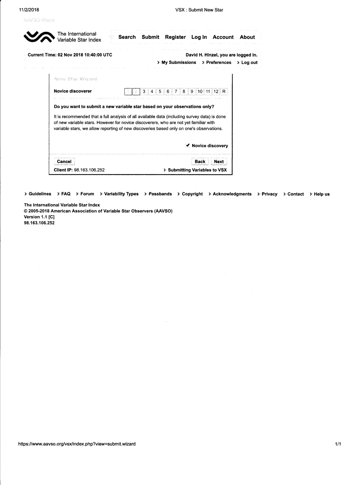
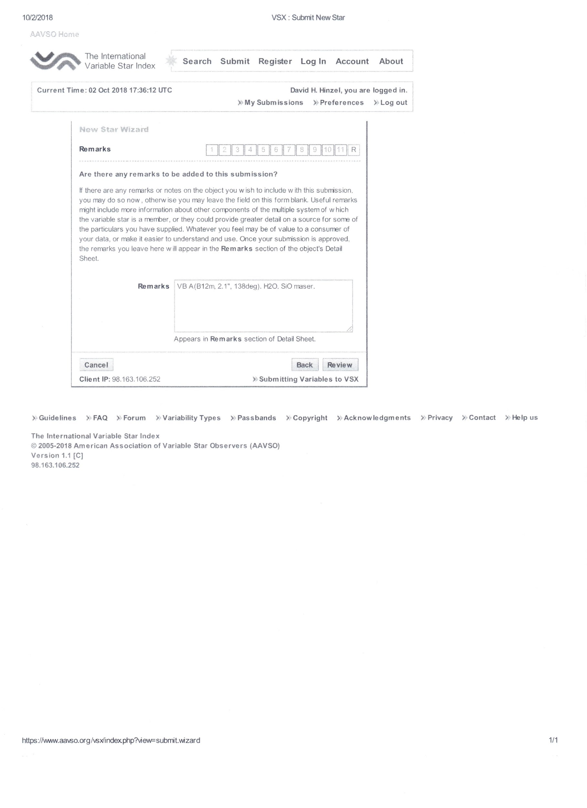
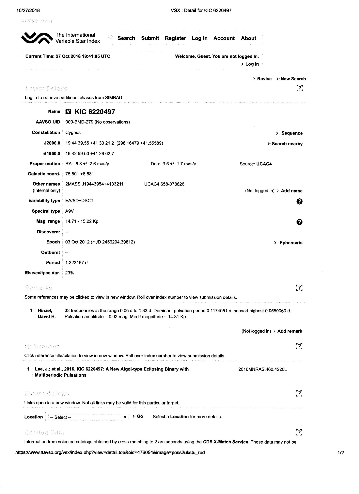

Por Juan-Luis Gonzalez Carballo, David Hinzel, Gabriel Murawski, Sebastián Otero,
Patrick Wils y Stella Kafka
INTRODUCCIÓN
Descripción general
Los datos sobre estrellas variables cambian constantemente. Los estudios nuevos y en curso están localizando nuevas estrellas variables todos los días. Las correcciones a errores en los datos siempre llegan. Pero todo este trabajo para refinar lo que sabemos sobre estas estrellas está sucediendo en diferentes momentos y en diferentes lugares. La misión de VSX es reunir toda esa nueva información en un único repositorio de datos, hacerlo accesible al público a través de una interfaz web sencilla y proporcionar las herramientas necesarias para la revisión controlada y segura de los datos. VSX fue concebido y creado por el astrónomo aficionado Christopher Watson en respuesta a los deseos específicos de los miembros del Equipo de Cartas y del Grupo de Trabajo de Base de Datos de Estrellas de Comparación de la Asociación Estadounidense de Observadores de Estrellas Variables (AAVSO), y a la necesidad más amplia percibida de un "centro de intercambio" central de acceso global para toda la información establecida y actualizada sobre estrellas variables.
El sitio web VSX fue diseñado para ser el medio en línea mediante el cual los datos de estrellas variables se ponen a disposición del público en general, y a través del cual los datos se mantienen, revisan y comentan. Esta base de datos literalmente cobra vida con el aporte de todo el mundo de los contribuyentes registrados.
Para mantener VSX actualizado y poblado con los últimos hallazgos corregidos, personas registradas y aprobadas revisan y modifican constantemente los metadatos, siempre citando fuentes para cualquier detalle nuevo y documentando completamente las razones detrás de cualquier adición o cambio. Al mantener un estricto control de versiones de todos los registros, aquellos que confían en que esta información es precisa y verdadera pueden rastrear, validar y hacer un seguimiento del historial del conocimiento recopilado sobre cada estrella variable.
Detalles
La base de datos VSX se llenó inicialmente con todo el Catálogo General Combinado de Estrellas Variables (GCVS 4.2, 2004 Ed.). Esto incluía las listas principales de los vol. I-III, el catálogo NSV de estrellas variables sospechosas y sus suplementos, todas las identificaciones cruzadas del vol. IV, y todas las referencias y comentarios de todos los volúmenes. Luego se seleccionaron e integraron las diferencias entre la edición publicada de 2004 del GCVS y la versión "viva" disponible en los servidores de archivos de Sternberg. A este conjunto de datos base se agregaron los catálogos publicados de variables rojas del Northern Sky Variability Survey (NSVS), las variables detectadas del 3.º All Sky Automated Survey (ASAS-3), todas las nuevas variables informadas en los diversos volúmenes del
Information Bulletin on Variable Stars (IBVS), las Miras y las binarias eclipsantes encontradas y publicadas a partir de los datos de la Fase 2 del Experimento de Lente Gravitacional Óptica (OGLE-II) y las binarias de contacto brillantes extraídas de los datos del Experimento de Búsqueda Transient Óptica Robótica (ROTSE-I). En conjunto, esto se convirtió en la Versión Base 1.0 de la tabla de objetos VSX. Las relaciones internas entre las tablas de objetos, referencias, observaciones e identificación cruzada se establecieron programáticamente utilizando los diversos datos de origen. Se generaron nuevas identificaciones cruzadas no publicadas entre los diversos catálogos a través de algoritmos de búsqueda de cono personalizados y luego se verificaron.
Moderación de la base de datos
Los moderadores utilizan un inicio de sesión seguro para acceder a las herramientas en línea para trabajar con la base de datos. Todas las modificaciones o adiciones enviadas se ponen en cola en un contenedor de almacenamiento y son revisadas por pares. Cuando se acepta la envío, se publica en la base de datos activa y todos los detalles sobre el cambio o la adición se registran con la revisión. A la modificación del registro estelar en VSX se le asigna un número de revisión, al que se puede hacer referencia en cualquier momento para recuperar cualquier versión de los datos de una estrella en particular. El sistema elimina automáticamente los envíos que no se aceptan porque se requirieron modificaciones o los envíos incompletos después de dos meses. Las revisiones publicadas que se determinen posteriormente como erróneas por cualquier motivo se pueden revertir. Los moderadores de datos y/o el administrador del proyecto se reservan en todo momento el derecho de rechazar un envío para su modificación o un nuevo envío de estrella variable y pueden, a su discreción, revisar cualquier envío realizado a VSX para mayor claridad, coherencia o convención.
Consulta de la base de datos
Hay herramientas basadas en la Web disponibles para el público para realizar consultas en VSX de diversas maneras. Los datos públicos devueltos en una transacción de consulta contienen todos los datos acumulados para el nivel de revisión más reciente de cada estrella en el conjunto de registros, incluidos los detalles de todas las modificaciones realizadas a los datos y las referencias para respaldar esos cambios. También se pueden ver las revisiones anteriores. La interfaz pública no incluye los medios para modificar los datos de ninguna manera (solo los usuarios registrados pueden hacerlo). Se pueden enviar sugerencias de modificación a los administradores.
ENVÍO DE DATOS
I. Política de envío
Ten en cuenta lo siguiente antes de enviar un nuevo objeto o una revisión:
· Lee todas las pautas antes de intentar enviar tu primer objeto a VSX.
· Se requiere al menos un conocimiento básico sobre curvas de luz y análisis de estrellas variables.
Los moderadores te ayudarán durante el proceso de envío, pero no pueden enseñarte cómo analizar una estrella variable.
Se anima a los observadores que realicen búsquedas sistemáticas de estrellas variables que den como resultado una gran cantidad de descubrimientos a que envíen sus resultados a revistas como JAAVSO.
Consulta la literatura (VizieR/SIMBAD) para confirmar que tu estrella variable es un objeto nuevo. Tratamos de mantener actualizado VSX, pero hay muchas listas y artículos recientes que aún no están incluidos en VSX y no se te puede acreditar como descubridor si el objeto ya se ha publicado (de todos modos, puedes enviarlo con la referencia adecuada).
Asegúrate de que el objeto esté identificado correctamente. Indique la posición J2000 basada en Gaia DR2 tal como la proporciona VizieR o desde otro catálogo astrométrico como UCAC4 si el objeto no está presente en Gaia DR2.
Si encuentra una nueva variable, debería poder combinar sus nuevos datos con datos de estudio de archivo como los de ASAS-SN (las observaciones de ASAS-SN de todo el cielo están disponibles entre Vmag. 10 y 16,5). Se deben verificar y utilizar CRTS, ASAS-3, NSVS, SuperWASP u otros conjuntos de datos disponibles y relevantes según la posición y magnitud de la estrella si son útiles para obtener elementos mucho mejores y asegurar la clasificación del objeto.
VSX es principalmente un catálogo de estrellas variables galácticas. Las estrellas variables en cúmulos globulares y los objetos extragalácticos como supernovas y cuásares normalmente no se incluyen, a menos que sea por razones históricas o para campañas de observación de AAVSO.
La cantidad de envíos por usuario/grupo está restringida a uno por día.
· Si está realizando una búsqueda sistemática de variables que dé como resultado muchos objetos nuevos, le recomendamos que publique esos resultados en una revista (por ejemplo, JAAVSO o PZP) en lugar de enviarlos de forma individual a VSX.
· El sistema eliminará los envíos que aún no hayan sido aceptados después de dos meses (60 días) cuando se requirieron modificaciones.
II. ¿Su objeto es variable?
Para ingresar a VSX, se debe demostrar que el objeto es variable. Sin embargo, ¿qué constituye una prueba? A continuación se presentan algunas pautas básicas. Modificaremos las reglas en circunstancias inusuales, pero en general, si sigue estas pautas, tiene muchas posibilidades de que su objeto favorito se agregue al sistema.
a. La variabilidad se determina con toda la información posible. Si envía solo unos pocos puntos de datos (10 a 30), debe justificar su conclusión de que este objeto es variable con evidencia adicional y notas de respaldo: ¿esta variabilidad es sustancial (dentro de los errores de medición)? ¿Puedes utilizar datos del catálogo 2MASS para ver si esta estrella tiene un color rojo, si es una variable Mira? etc. Te recomendamos encarecidamente que observes tu objeto con frecuencia (muchas veces durante más de una noche) y envíes la curva de luz completa de tus observaciones. Las curvas de luz incompletas o dispersas no pueden aceptarse como evidencia de variabilidad, ya que no brindan mucha información sobre la estrella.
Este es un ejemplo de una curva de luz sin suficientes puntos (esta curva de luz no será aceptable por sí sola)
Esta es la misma estrella pero con suficientes observaciones para confirmar la variabilidad e incluso clasificarla como un objeto de tipo GCAS:
No se recomienda el envío de descubrimientos a partir de observaciones visuales, excepto para objetos transitorios como novas. Si sospechas que un objeto es una variable visual, publícalo en uno de los foros de AAVSO (por ejemplo, el Foro de Observación Visual de AAVSO) y pide confirmación a nuestra comunidad de AAVSO.
b. No se recomiendan las observaciones sin filtros. Existen muchos problemas sistemáticos con las observaciones sin filtros. Si debe enviar fotometría CCD sin filtros, verifique un gráfico de la masa del aire para el objeto y evalúe si su variación imita o refleja el cambio de masa del aire (un problema común). También debe verificar el color del objeto y de las estrellas de comparación, si es posible (Tycho B-V, colores 2MASS, algo que lo ayude a comprender las diferencias de color). Es posible que solicitemos más evidencia de respaldo para los envíos sin filtros. Observar con al menos dos filtros es muy útil para el trabajo de descubrimiento; a menudo puede clasificar aproximadamente una estrella si tiene su color y la forma de su curva de luz. La siguiente imagen demuestra el impacto de los efectos atmosféricos comunes en una curva de luz (imagen tomada de C. von Essen et al. A&A 2018 -- https://arxiv.org/pdf/1607.03680.pdf )
De arriba a abajo: (a) Curva de luz inicial Define la duración de la observación. A partir de ahora, se están agregando efectos adicionales en versiones posteriores de la curva de luz. (b) Inhomogeneidades atmosféricas e instrumentales. (c) Centelleo. (d) Efectos relacionados con malas condiciones de observación y variabilidad relacionada con el seeing más errores fotométricos. El valor promedio de las barras de error se ha aumentado para cumplir con la desviación estándar de la curva de luz. (e) Igual que (d), pero las barras de error se han ampliado en β Las siguientes cantidades se han escalado y desplazado para cumplir con el gráfico. AM: tendencia de la masa de aire durante las observaciones. PE: variabilidad temporal de los errores fotométricos. FC: recuentos integrados en el campo plano sintético después de los
desplazamientos de píxeles (x,y) calculados.
c. Para objetos transitorios, como novas, recomendamos encarecidamente que primero envíe su descubrimiento a la Oficina Central de Telegramas Astronómicos de la IAU (http://www.cbat.eps.harvard.edu/CBAT. Consulte también http://www.cbat.eps.harvard.edu/HowToReportDiscovery.html). Esto difunde la información más rápidamente y también es la vía para obtener observaciones de confirmación de su objeto (CBAT generalmente se comunica con la AAVSO para realizar observaciones de seguimiento). También puede anunciar su descubrimiento en muchas de las listas de correo de alerta, como vsnet-alert o baavss-alert.
III. ¿Qué información necesito tener antes de enviar un descubrimiento?
a. Primero, necesita coordenadas precisas de su nuevo objeto. Gaia DR2 debería poder
proporcionar la precisión solicitada con un error de no menos de uno o dos segundos de arco.
b. Los planetas menores (por ejemplo, asteroides) son las alimañas del cielo. Aparecen en muchas imágenes y, cuando están cerca de puntos estacionarios, pueden moverse muy lentamente. Verifique si uno de estos podría
ser su "nueva" estrella en el Verificador de Planetas Menores Candidatos de SN. También recomendamos enfáticamente que sus observaciones se realicen durante varios días para que pueda buscar incluso un movimiento pequeño. Las candidatas a supernovas deben informarse al Transient Name Server (TNS, https://wis-tns.weizmann.ac.il/content/tns-getting-started). No aceptamos supernovas a menos que se conviertan en sujetos de campaña o las personas soliciten específicamente su inclusión porque tienen observaciones de ellas.
c. Verifique si esta ya es una variable conocida. El mejor lugar para comenzar es el propio VSX. Debe realizar una búsqueda de área, ya que es poco probable que haya una coincidencia exacta de coordenadas y algunas variables informadas tenían un gran error en su informe de descubrimiento. Otras fuentes para buscar incluyen SIMBAD (http://simbad.u-strasbg.fr/simbad/) y VizieR (https://vizier.u-strasbg.fr/viz-bin/VizieR). VizieR también le brindará identificaciones cruzadas y fotometría de catálogos existentes, lo cual es información útil para incluir en su informe. Cuando realiza una “búsqueda por posición” en VSX, obtendrá enlaces para buscar por posición en varios catálogos sin tener que ingresar la posición nuevamente.
(Nota: asegúrese de tener marcadas las casillas correspondientes: Variables (V), Sospechosos (S), No variables (N) y No marcado; de lo contrario, su búsqueda no arrojará ningún resultado, pero puede haber un objeto conocido en esa posición).
d. Si está observando sin filtros, no compare sus resultados con ninguno de los relevamientos fotográficos (DSS, POSS, etc.) para demostrar la "variabilidad". Muchos objetos rojos aparecerán más brillantes en sus imágenes que en las placas de archivo; esto a menudo puede ser una diferencia de muchas magnitudes.
e. Observe atentamente sus imágenes. Hay muchos defectos que pueden generar una variabilidad falsa. Los efectos de la masa de aire ya se mencionaron, pero hay imágenes fantasma de estrellas brillantes, luz dispersa, píxeles calientes/fríos que migran a través de las imágenes durante las series temporales, etc. Piense en cualquier manera en que un problema podría afectar sus datos y prepárese contra él antes de asumir la variabilidad. Si no está seguro, consulte a los expertos en una de las listas de correo que se han mencionado, o en el Foro VSX de AAVSO, etc.
IV. Envío de sus resultados a VSX
a. Necesita coordenadas precisas. Cualquier cosa con más de un segundo de arco de error no es recomendable. Es fácil obtener una precisión de sub-segundo de arco con los catálogos de referencia astrométrica modernos que ahora están disponibles. Si el objeto aparece en algún catálogo común, se le solicitará ese identificador cruzado. Las coordenadas deben provenir de un catálogo astrométrico. Use las posiciones J2000.0 de Gaia DR2 calculadas por VizieR siempre que estén disponibles (http://sci.esa.int/gaia/60243-data- release-2/).
Algunos ejemplos comunes de identificaciones cruzadas:
GSC 01234-06789 (5 dígitos antes y después del guion, utilice ceros a la izquierda si es necesario)
2MASS J11431012-5804040 (utilice una J antes de las coordenadas)
USNO-A2.0 0300-13671194
USNO-B1.0 0319-0360318 (utilice un guion entre USNO y la versión del catálogo, es parte del acrónimo)
GSC2.3 S111210165373
UCAC4 810-003941
b. Debe proporcionar la magnitud máxima y mínima de variabilidad. Si tiene estrellas de referencia calibradas en su imagen, úselas para determinar el punto cero y la magnitud objetivo. Utilice secuencias AAVSO, APASS, ASAS-3 (filtrado en V) o catálogos VizieR como CMC15, Pan-STARRS1, Gaia DR2, IPHAS, SDSS, VPHASDR2 o UCAC3 (http://vizier.u-strasbg.fr/viz-bin/VizieR), a través de transformaciones para obtener magnitudes máximas y mínimas calibradas en una banda de paso estándar (preferiblemente en V). También puede utilizar USNO-A2.0, USNO-
B1.0, GSC2.3, etc. si la estrella es demasiado débil y no está presente en los otros sondeos, pero debe indicar el tipo de magnitud y su origen. Si es imposible proporcionar una magnitud mínima y máxima calibrada con precisión en la misma banda de paso, puede proporcionar una magnitud (por ejemplo, en V) derivada de uno de los catálogos mencionados anteriormente (que puede considerarse como la magnitud media para estrellas con una amplitud relativamente pequeña) y la amplitud observada en otra banda de paso (por ejemplo, transparente, sin filtro).
Una hoja de cálculo para aplicar estas transformaciones está disponible en:
https://www.aavso.org/vsx/_images/UCAC3_CMC15_SDSS_convertions.xlsx
En el Apéndice 3 se muestra un ejemplo de cálculo de V transformada a partir de CMC15 y UCAC3. Sin embargo, para estrellas en explosión como novas o novas enanas, siempre se debe dar la magnitud máxima. Nota: en todo el texto, cuando se utiliza la magnitud máxima, se entiende que es la magnitud máxima, cuando la estrella está en su punto más brillante y, por lo tanto, con el número más pequeño para la magnitud (p. ej., una nova enana en explosión), como es habitual en los estudios de estrellas variables.
La magnitud mínima es entonces la magnitud mínima, cuando la estrella está en su punto más débil y el número para la magnitud es mayor (p. ej., una binaria eclipsante en medio de un eclipse).
c. Envíe evidencia de respaldo. Solicitamos al menos un gráfico de la fotometría con el tiempo en el eje horizontal y la magnitud en el eje vertical (más brillante en la parte superior, más débil en la parte inferior). Si tiene suficiente información para analizar la curva de luz, determinar el período y clasificar la estrella, entonces también debe enviar un gráfico de fase. También puede incluir los datos reales en forma de tabla, ya que pueden aclarar curvas de luz sospechosas o ayudar a una mejor determinación del tipo y/o período más adelante. No se permite enviar los datos solo en forma de tabla. No envíe los datos reales bajo el supuesto de que este sitio web archivará esos datos, ya que VSX no es la base de datos internacional de AAVSO. No garantizamos que los datos enviados se conserven.
Si desea enviar sus datos a la AID, tenga en cuenta que una estrella variable debe tener un identificador único AAVSO (AUID) antes de que las observaciones de esa estrella puedan enviarse a la base de datos internacional de AAVSO. Utilice el enlace Solicitar AUID en el campo UID de AAVSO si necesita enviar datos para una estrella sin un AUID. Los moderadores de VSX reciben una notificación y asignan el AUID inmediatamente. Esta es la forma más rápida de obtener un AUID asignado, y los moderadores podrán verificar si hay entradas duplicadas en VSX u otra información existente. Los correos electrónicos a la sede se dirigirán a los moderadores de VSX, por lo que tardarán más tiempo. Si no incentivamos las observaciones de ese objeto (por ejemplo, estrellas constantes, estrellas con amplitudes extremadamente bajas), seremos contactados con usted.
Debe iniciar sesión en VSX para que esa opción esté activa. Si aún no tiene una cuenta VSX, cree una a través de este enlace:
https://www.aavso.org/vsx/index.php?view=registration.top.
El Formulario de Nueva Estrella le brinda la opción de cargar dos documentos de respaldo. Si tiene más de dos gráficos para cargar (por ejemplo, gráfico de hallazgos, gráfico de fase de un período y gráfico de fase de otro período), puede guardar un borrador de su envío y luego podrá editarlo y cargar tantos archivos como desee (guardando una versión borrador cada vez que cargue un archivo).
d. La mayoría de las estrellas de magnitud 14 se identifican fácilmente en las imágenes de Digital Sky Survey
https://www.sdss.org/ con buenas coordenadas. Sin embargo, para campos abarrotados, o estrellas muy débiles, o estrellas que no aparecen en uno de los catálogos principales como Gaia o 2MASS, debe enviar un diagrama de hallazgos. La regla general es que si hay alguna posibilidad de confusión, identifique. ¡Quiere que la gente pueda encontrar esta nueva variable! Estos diagramas de hallazgos deben estar en formato jpeg, png o gif y ser razonablemente pequeños (no envíe mapas de bits ni archivos de ajuste); norte y este marcados, y alguna indicación de escala.
V. Nuevas variables y envíos de minería de datos
En general, los datos enviados a VSX para nuevas variables encontradas en datos de encuestas (públicas) deben ser lo más completos posible: siempre se debe proporcionar la posición, el tipo de variabilidad y la magnitud máxima y mínima. Para las variables periódicas, también se requieren el período y la época (tiempo de mínimo para sistemas binarios eclipsantes, pulsadores RV Tauri, variables elipsoidales y rotacionales, y de máximo para variables pulsantes).
a. Siempre proporcione la identificación del objeto del estudio, por ejemplo, NSVS 123456 o
ASAS J123456-7840.1 cuando esté disponible.
b. Las posiciones proporcionadas por estudios como NSVS y ASAS-3 no son muy precisas y pueden tener errores de 10" y más. Si es posible vincular inequívocamente el objeto a uno de un catálogo astrométrico, proporcione la identificación de ese catálogo (no utilice nombres de Gaia DR2 a menos que no haya otro identificador disponible) y utilice su posición. Dependiendo de su brillo, las estrellas que estén a menos de 60" entre sí pueden combinarse y medirse como un solo objeto en algunos de los estudios; intente elegir la identificación más probable en función de los colores o magnitudes.
c. No adjunte las curvas de luz proporcionadas ded por los sitios web de encuestas, y no adjunte el archivo de datos de las encuestas. Estos están fácilmente disponibles desde dentro de VSX. En su lugar, proporcione gráficos de fase (para variables periódicas) o combine curvas de luz de varias encuestas en un solo gráfico, asegurándose de que los datos de diferentes encuestas sean distinguibles. Cuando hay dos o más sinónimos presentes en la base de datos NSVS, combínelos también en un solo gráfico, preferiblemente también con diferentes símbolos y/o colores. Los datos de otras encuestas para las que no hay un enlace desde VSX deben adjuntarse o debe proporcionarse una URL.
d. Algunas observaciones generales sobre el uso de datos de encuestas particulares:
Para usar datos ASAS-SN, edite el campo “Ingrese la cantidad de días para volver atrás” para obtener todos los datos disponibles (comenzando desde 2455500 aproximadamente). La fecha proporcionada por NSVS es MJD-50000 = JD-2450000.5. VSX espera HJD para la época, por lo que agregue 2450000.5 a la fecha NSVS (y realice la corrección heliocéntrica) Use la máscara 6420 para los datos NSVS.
En general, no use datos ASAS-3 de categoría D.
Tenga cuidado con las noches de baja calidad y los diferentes puntos cero en los datos SuperWASP.
No se aceptan envíos basados únicamente en datos fotométricos de Tycho.
e. Algunas notas sobre la resolución de estrellas según estudios particulares. Las estrellas más cercanas a la
siguiente distancia se combinarán:
All Sky Automated Survey for Super Novae (ASAS-SN): ~17”
https://asas-sn.osu.edu/
Northern Sky Variability Survey (NSVS): ~55”
https://skydot.lanl.gov/nsvs/nsvs.php
Super Wide Angle Search for Planets (SuperWASP): ~60”
https://wasp.cerit-sc.cz/
All Sky Automated Survey-3 (ASAS-3): ~23” (hasta 40” en el caso de estrellas brillantes, p. ej. mag. 8-9)
http://www.astrouw.edu.pl/asas/
AAVSO Photometric All-Sky Survey (APASS): ~12”
https://www.aavso.org/apass
Catalina Real-Time Transient Survey Catalina Sky Survey Telescope (CSS): ~11"
Telescopio de sondeo de Siding Springs para el sondeo transitorio en tiempo real Catalina (SSS): ~9"
Telescopio de sondeo transitorio en tiempo real Catalina (MLS): ~7"
http://crts.caltech.edu/
Hay una hoja de cálculo para corregir magnitudes por contaminación lumínica de los compañeros (desmezcla)
disponible en:
https://www.aavso.org/vsx/_images/COMBLEND.xlsx
Se debe agregar un comentario para indicar si se aplicó una corrección (recomendado) o no y para brindar información sobre la identificación, magnitud y distancia de los compañeros.
Por ejemplo: "Magnitudes ASAS-3 contaminadas por GSC 00000-00000 (V= 14.5; sep. 17"). El rango ha sido corregido."
VI. Nuevas presentaciones de estrellas variables de la literatura
a. Se han importado varios catálogos de estrellas variables a VSX. Sin embargo, se ha descrito una gran cantidad de variables en la literatura, a las que no se les ha asignado un nombre GCVS y no se han incorporado a VSX. Para otras variables, existe información actualizada en la literatura (por ejemplo, correcciones de GCVS o datos de sondeo) pero aún no se ha ingresado a VSX. Su ayuda para que VSX sea más completo y actualizado también es bienvenida.
b. Proporcione todos los datos que se encuentran en el artículo. Utilice la posición tal como se proporciona en el artículo o proporcione una mejor posición (de un catálogo astrométrico) basada en la identificación proporcionada en el artículo. La información que no se puede colocar fácilmente en los campos estándar de VSX, debe agregarse como un comentario.
Por ejemplo: magnitud en el mínimo secundario para un sistema binario eclipsante, época del mínimo secundario para un eclipse excéntrico, etc.
c. Proporcione el código bibliográfico de la publicación y el enlace a la página de resúmenes de ADS (http://adsabs.harvard.edu/abs/...) cuando exista. Para preprints publicados en astro-ph, proporcione también la URL de la página de resúmenes de ADS (por ejemplo, http://adsabs.harvard.edu/abs/2014arXiv1401.0635T).
Cuando no exista un código bibliográfico, proporcione la URL de la publicación en línea siempre que sea posible. Cuando no se pueda acceder a una publicación en línea, proporcione una copia escaneada, para que los moderadores puedan verificar su envío. Las notas en grupos de discusión por correo electrónico como vsnet-alert, cvnet-discussion, etc. son aceptables como referencias cuando brindan suficiente información para decidir que el objeto es una variable (en principio, las mismas reglas que en las secciones I y II son válidas aquí). Si tiene más de una referencia para proporcionar (por ejemplo, datos de múltiples fuentes), puede guardar un borrador de su envío en el Formulario New Star y luego podrá editar su borrador y agregarlos (guardando una versión de borrador después de cada referencia que haya agregado).
d. Si hay más de 10 o más objetos nuevos o revisiones disponibles electrónicamente en forma de tabla de una sola publicación, envíe un mensaje a vsx@aavso.org. A menudo, estos se pueden importar más fácilmente a VSX, en lugar de ingresarlos manualmente. Preparar una lista (un archivo de texto o una hoja de cálculo de Excel) con los datos relevantes separados en columnas le ahorrará a usted (y a los moderadores de VSX) mucho tiempo.
VII. El proceso VSX
Asegúrese de verificar todo dos veces antes de presionar el botón de envío. Hay una casilla de verificación "Solo borrador" en la parte inferior del formulario New Star que le permitirá trabajar con su envío hasta que esté seguro de que está listo para enviarlo. Úsela. Asegúrese de utilizar el enlace de verificación puntual en el Campo de posición y el enlace "Verificar nombre" en el campo de nombre principal para evitar duplicados. Una vez que haya enviado una nueva estrella para su inclusión en VSX, la solicitud se envía a un grupo de "moderadores" voluntarios. Estas personas son expertos en estrellas variables, que por lo general han observado miles de curvas de luz y, a menudo, son observadores desde hace mucho tiempo. Uno o más de los moderadores revisarán su envío. Si ha sido diligente y ha enviado un candidato obvio, a menudo se aprobará en muy poco tiempo (hasta unos pocos días), según la carga de trabajo.
Habrá envíos en los que el moderador considere que se ha enviado información insuficiente o incorrecta. Por lo general, se comunicará con el remitente para solicitarle una aclaración. No considere esto como una confrontación o una falta de respeto; los moderadores realmente están tratando de ayudar. Pueden ofrecer sugerencias sobre cómo volver a enviar sus datos para garantizar que la verificación de datos sea más fácil en el futuro. Los envíos que no hayan sido aceptados después de dos meses (60 días) cuando se requirieron modificaciones, serán eliminados por el sistema.
Además, no se desanime si su envío es rechazado. Los moderadores le darán sus razones para el rechazo. ¡Léalo con atención! Recibirá rechazos a menudo en la vida, y la astronomía no es diferente. La mayoría de los profesionales envían docenas de propuestas durante su carrera y la mayoría son rechazadas por sus pares. ¡Aprenda de los comentarios e inténtelo de nuevo!
En cualquier momento, los moderadores pueden invocar su derecho a revisar o actualizar de otro modo cualquier envío realizado a VSX para mayor claridad, coherencia o convención, siempre que crean que la modificación puede realizarse sin afectar negativamente la integridad del envío. Por lo general, se le informará de cualquier cambio realizado por los moderadores. Tenga en cuenta que estos comentarios están orientados al envío a VSX. El envío a VSX no impide enviar su análisis de datos a alguna otra fuente adicional, tal vez como un documento formal para su publicación. No conservamos ningún tipo de derecho sobre sus datos. Hay muchas revistas que aceptan investigaciones sobre estrellas variables, y le recomendamos que las lea todas con atención. Las que nos han resultado más útiles son:
JAAVSO (http://www.aavso.org/publications/jaavso/):
Dirigida por la AAVSO; totalmente arbitrada y disponible en formato electrónico e impreso. Hay un cargo por página para los no miembros. El acceso a este sitio web está restringido únicamente a los miembros de la AAVSO.
OEJV (http://var.astro.cz/oejv/)
Una buena revista básica. Solo en formato electrónico. Ahora arbitrada.
Peremennye Zvezdy (http://www.astronet.ru/db/varstars/)
Dirigida por la gente de GCVS. Solo en formato electrónico. Arbitrada. El suplemento contiene principalmente
resultados de observación y coincide con la mayoría de los proyectos de descubrimiento.
IBVS (http://www.konkoly.hu/IBVS/IBVS.html)
Dirigida por las Comisiones 27 y 42 de la IAU, esta es una revista totalmente arbitrada. En formato electrónico y en papel.
Es más difícil publicar artículos aquí; por lo general, se requiere un análisis completo.
JBAA ( http://www.britastro.org/jbaa/ ) Principalmente para miembros de la BAA. Una buena revista publicada 6 veces al año. No tiene versión electrónica.
PASP ( http://www.journals.uchicago.edu/PASP/ ) Esta revista profesional totalmente arbitrada acepta artículos de calidad de aficionados. Se cobra por página. Muchas otras revistas profesionales aceptan artículos de estrellas variables, pero las que se enumeran arriba son las más comunes. ¡Buena suerte!
Apéndice 1: Tipos de estrellas variables y designaciones VSX: (si está interesado en aprender más sobre
las curvas de luz de las estrellas variables, considere asistir al curso AAVSO CHOICE “Clasificación de estrellas variables y curvas de luz”).
Basado en el documento Catálogo general de estrellas variables (GCVS) de designaciones de tipos de estrellas variables (Samus et al., 2009) con expansiones, aclaraciones, correcciones y agregados de la literatura y encuestas. Esta lista incluye todos los tipos de variabilidad que se encuentran en el Índice internacional de estrellas variables de AAVSO (VSX). La mayoría de ellos provienen del GCVS, pero hemos agregado nuevos tipos reconocidos en la literatura y tipos utilizados en listas publicadas en otros estudios y encuestas.
Algunas convenciones incluidas en esta lista:
Un signo de dos puntos ( : ) después del tipo de variabilidad -o cualquier otro campo- significa que el valor/la clasificación es incierto.
Un carácter de barra vertical ( | ) entre dos tipos diferentes significa un OR lógico; La clasificación es incierta y se indican todos los tipos posibles. Un ejemplo de esto es ELL|DSCT, donde la estrella puede ser un sistema binario elipsoidal o una variable pulsante de tipo DSCT con la mitad del período dado.
Un carácter más ( + ) significa un AND lógico; se ven dos tipos de variabilidad diferentes en la misma estrella o sistema. Un ejemplo de esto sería ELL+DSCT, donde uno de los componentes de un sistema binario elipsoidal es una variable pulsante de tipo DSCT.
Un carácter de barra ( / ) indica un subtipo. En el caso de sistemas binarios (eclipsantes,elipsoidales o variables de reflexión) se utiliza para ayudar a describir las propiedades físicas del sistema (E/PN o EA/RS), la clase de luminosidad de los componentes (EA/DM) o el grado de llenado de sus lóbulos de Roche internos (EA/SD). Este es el sistema de clasificación GCVS.
En variables cataclísmicas, se utilizan caracteres de barra para indicar algunas propiedades del sistema, como el grado de polarización (NA/DQ) o la naturaleza de sus componentes (UG/IBWD). En algunos casos, estos subtipos también constituyen un tipo de estrella variable principal independiente, porque el tipo principal de variabilidad con el que suelen estar asociados no está presente. Existen estrellas RS CVn no eclipsantes (RS), estrellas Wolf-Rayet individuales eruptivas (WR) y subtipos binarios cataclísmicos que muestran variabilidad pero no erupciones (DQ, IBWD).
En los sistemas binarios de rayos X, los subtipos indican qué tipo de comportamiento muestra el sistema binario, como en los estallidos de rayos X (XB), los estallidos de gran amplitud también en el campo visual (XN), el efecto de reflexión (XR) o también puede indicar algo sobre la naturaleza del objeto, como en un objeto compacto que es un púlsar (XP). Finalmente, los subtipos de NL (similares a nova; NL/V y NL/VY) se muestran como clases independientes, ya que estos subtipos no se aplican a una clase distinta a NL.
Algunas clases de variabilidad muestran más de un tipo de variación, pero se han clasificado en el grupo que incluye su tipo de variabilidad más importante. Por ejemplo, las estrellas SDOR muestran tanto erupciones como pulsaciones, pero se han incluido solo en el grupo eruptivo. La definición del tipo explica su comportamiento. Las estrellas RCB también pulsan, pero como su característica principal son los desvanecimientos profundos, también se incluyen solo en el grupo eruptivo. Lo mismo es válido para las estrellas DY Per. Las variables DPV muestran variabilidad orbital periódica, pero experimentan pérdida de masa y lo que las define es la presencia de un período largo que dura aproximadamente 33 veces el período orbital.
Por lo tanto, también se incluyen solo en el grupo eruptivo. El origen de la variabilidad de las variables de tipo λ Eri (LERI) no está claro: pueden deberse a la rotación o a una pulsación no radial. Se han incluido solo en la clase de variables rotatorias.
Los tipos de estudio son clasificaciones tomadas tal como aparecen en las listas publicadas originales de los propietarios/analistas del estudio. Se incluyen bajo un encabezado separado en este documento porque no son tipos reales, per se, sino que suelen ser el resultado de una clasificación menos específica debido a la naturaleza automatizada del análisis. Estos tipos deberían eventualmente ser reemplazados por los tipos convencionales.
Las designaciones de tipo de variable utilizadas en VSX pero que actualmente no se utilizan en el GCVS están resaltadas en las listas principales de este documento con el icono que las acompaña. La lista completa de tipos de variabilidad de VSX se puede encontrar en https://www.aavso.org/vsx/index.php?view=about.vartypes.
Apéndice 2: Ejemplos de envío de datos a VSX
Hay dos formas diferentes de enviar nuevos descubrimientos de estrellas en VSX: a través de nuestro “New Star Wizard” y nuestro “New Star Form”. Los siguientes ejemplos son instrucciones paso a paso sobre cómo enviar datos utilizando cualquiera de los métodos. Ambos métodos admiten envíos de datos “principiantes” y “avanzados”.
1. Ejemplo de New Star Wizard: descubrimiento de principiantes
Incluso cuando recomendamos envíos basados en un análisis completo (por ejemplo: datos de encuesta combinados con los datos del observador), tenemos una opción de descubrimiento de principiantes que debe marcarse en el caso de descubrimientos basados solo en observaciones propias.
Descripción general:
Para este ejemplo, se supondrá que una nueva estrella ha sido descubierta por un individuo ya sea con su propio telescopio o con una red de telescopios robóticos como AAVSOnet.
Este individuo ha tomado numerosas imágenes, principalmente con un filtro transparente (lo llamaremos "visual") pero también incluyendo algunas observaciones de banda V de Johnson. Este individuo tiene una curva de luz muy extensa basada en observaciones desde HJD 2455800 hasta HJD 2456500 (26 de agosto de 2011-26 de julio de 2013) y está listo para enviarse a VSX. Debe tenerse en cuenta que este es un ejemplo solo con fines educativos y que esta estrella en realidad no existe y, por lo tanto, no está en la base de datos de VSX.
Las estrellas presentadas en las Secciones 2 y 3 a continuación son estrellas reales enviadas a VSX como resultado de la exploración de datos y el envío/revisión de artículos. Con base en la curva de luz obtenida durante el tiempo mencionado anteriormente, el observador tiene los siguientes datos de respaldo para afirmar el descubrimiento de una nueva estrella. Estos datos fueron analizados con el software AAVSO VStar (https://www.aavso.org/vstar), pero también se podrían haber utilizado otras herramientas de análisis. En primer lugar, se muestra la curva de luz compuesta obtenida durante el período de observación.
Con base en esta curva de luz, se realizó un análisis utilizando VStar para determinar el período de este objeto. El período se analizó con la opción DC DFT en VStar, lo que produjo el periodograma del espectro de potencia que se muestra. Si se selecciona la pestaña “Top Hits” en el panel de resultados DC DFT, se presenta una tabla de frecuencias. Seleccione el Top Hit con la mayor potencia/amplitud. Esto produce un gráfico de fase para esta estrella como se muestra a continuación.

Para comenzar el proceso de envío de solicitudes para VSX, inicie sesión en la página de VSX a través del enlace “Iniciar sesión” o “Enviar”. Proporcione su número de usuario ame y contraseña.
La primera página se muestra a continuación.
Al hacer clic en el botón “Iniciar”, se abre la página “Descubrimiento para principiantes”, como se muestra. Si se trata de un descubrimiento para principiantes, marque esa casilla en la página. Si no es un descubrimiento para principiantes, haga clic en el botón “Siguiente”. Esto abrirá la página “Posición”.
Ingrese la posición de la estrella en A.R. y Dec. Se recomiendan las posiciones de Gaia DR2 (J2000.0) como se mencionó anteriormente en este manual (http://sci.esa.int/gaia/60243-data-release-2/).
Seleccione “Verificación puntual” para ver si hay otra estrella en esta posición. Si no, la ventana se verá así (es decir, nada dentro de 120 segundos de arco):
Cierre la ventana y haga clic en el botón “Siguiente”. Esto dará como resultado lo siguiente:
Como se recomienda, si esta estrella se encuentra a través de los datos del propio observador, se debe proporcionar un nombre de uno de varios catálogos. Se puede acceder a todos los catálogos a través de VizieR
(http://vizier.u-strasbg.fr/viz-bin/VizieR). Las estrellas brillantes tendrán identificadores HD, SAO, CPD, CD, BD, HIP,
PPM, TYC o GSC que se utilizan mucho más ampliamente (en orden de prioridad) por lo que deberían preferirse a 2MASS, USNO u otros identificadores de catálogo astrométrico. En este caso, el nombre de la estrella es HD 82902. Esto debe ingresarse en la entrada "Nombre principal". Otras identificaciones irán en el campo "Otros nombres". Al hacer clic en el botón "Verificar", se obtiene:
No hay otra estrella con ese nombre. Cierre la ventana y haga clic en el botón “Siguiente”.
Esto da como resultado:
Este panel se utiliza para ingresar el tipo de variable de estrella. Esta parte del envío de VSX puede ser muy desafiante ya que hay muchos tipos y subtipos de variables. Antes de seleccionar un tipo de variable para VSX, el remitente debe estar lo más familiarizado posible con estos diversos tipos y subtipos. Se puede obtener información detallada en el Apéndice 1 anterior y en el Apéndice 4 a continuación. El Apéndice 1 analiza las convenciones de estrellas variables y las designaciones de VSX. El Apéndice 4 contiene enlaces a las diversas Secciones de Observación de AAVSO. Cada sección contiene descripciones detalladas de los tipos de estrellas observados en esa sección, así como una “Lista de objetivos” que contiene numerosos ejemplos de tipos y subtipos de variables. Además, estos se actualizan continuamente con los últimos datos de observación. Se pueden encontrar curvas de luz de muestra en el enlace “Lista de objetivos”. Para esta presentación VSX en particular, parece que el tipo de estrella variable adecuado es “M” o Mira. Debe seleccionarse en el menú desplegable “Tipo estandarizado”. Al hacer clic en el botón “Siguiente”, obtendrá lo siguiente:
En este caso, no se ha identificado ningún tipo espectral y debe dejarse en blanco. Al hacer clic en el botón “Siguiente”, obtendrá lo siguiente:
Las magnitudes mínima y máxima se pueden obtener directamente de los datos (para una mira como esta, debe determinar las magnitudes medias de los ciclos individuales más brillantes y más débiles) e ingresarlas en las ventanas de entrada correspondientes. Para las miras y otras variables de gran amplitud (CV, RCB) o estrellas con magnitudes medias variables, un decimal es suficiente. Dos decimales serían lo típico para el resto de las estrellas y solo use tres decimales cuando trabaje con variables de amplitud muy pequeñas o estrellas con una fotometría notablemente buena (por ejemplo, estrellas Kepler).
Al hacer clic en el botón “Siguiente”, obtendrá lo siguiente:
Tanto el período como la época se pueden leer directamente de los datos e ingresar en las ventanas apropiadas. Una época es un momento en el tiempo que se utiliza como punto de referencia para alguna cantidad astronómica variable en el tiempo, como las coordenadas celestes o los elementos orbitales elípticos de un cuerpo celeste, porque estos están sujetos a perturbaciones y varían con el tiempo. Puede encontrar una explicación detallada de la época en: https://en.wikipedia.org/wiki/Epoch_(astronomy).
No proporcione un número excesivo de decimales para la época, un número entero es suficiente para estrellas de período largo, mientras que 4 decimales solo se justifican para estrellas de período muy corto con buena fotometría.
La época debe ser una época de máximo para estrellas pulsantes [excepto RV Tauri y variables SR LSP (período secundario largo)], variables de reflexión y variables magnéticas y una época de mínimo para binarias eclipsantes, variables rotacionales, variables elipsoidales y estrellas RV Tauri.
El período debe expresarse en días (no en horas o segundos). También incluya solo dígitos significativos; si solo tiene dos noches de datos, no afirme una precisión de período de 7 decimales. También depende de la duración del período y del tipo de estrella. Por ejemplo, una mira puede incluso mostrar fluctuaciones de período, por lo que no se justifica dar varios decimales.
La entrada “duración del ascenso de la curva de luz” (para todas las variables que no sean eclipsantes y tránsitos de exoplanetas) es el tiempo transcurrido desde la magnitud mínima a la máxima expresado como un porcentaje del período de variabilidad y es necesario para pulsadores asimétricos (p. ej., RR Lyrae, cefeidas, HADS). No es necesario agregarlo para estrellas DSCT normales u otras variables sinusoidales
o para estrellas manchadas donde la curva de luz Cambios en la forma de la curva. En el caso de sistemas binarios eclipsantes o tránsitos de exoplanetas, este campo se convierte en la duración del eclipse en el caso de sistemas binarios eclipsantes y representa el tiempo transcurrido en mínimo primario desde el primer contacto hasta el último, también expresado como un porcentaje del período. La duración del eclipse solo se aplica a los sistemas binarios de tipo EA. No se puede determinar para sistemas EW y EB donde los cambios son continuos.
Al hacer clic en el botón “Siguiente”, se obtiene:
Aquí, se pueden cargar dos documentos de apoyo a VSX. En este caso, tanto la curva de luz como el diagrama de fase se pueden cargar desde la computadora personal donde se almacenan estos documentos. El título de cada uno debe ingresarse en la línea “Título”. La ventana de descripción puede dejarse en blanco o proporcionar información adicional sobre la documentación de apoyo cargada.
Al hacer clic en el botón “Siguiente”, obtendrá lo siguiente:
Ingrese su nombre si es el descubridor. Haga clic en el botón “Siguiente”. Esto dará como resultado:

Suponiendo que no hay material de referencia en la literatura sobre el descubrimiento, debe dejarse en blanco. Al hacer clic en el botón “Siguiente”, obtendrá lo siguiente:
Si tiene información adicional sobre la estrella que no se puede incluir en ninguno de los campos del formulario, añádala como comentarios. Se muestra un ejemplo en el cuadro Observaciones arriba. Otro ejemplo sería “Sistema excéntrico. Binario visual. A = 8,145; B = 10,315 Hp; sep = 1”,15. Magnitudes combinadas dadas en la tabla”.
No incluya comentarios personales en el campo Observaciones. Al hacer clic en el botón “Revisar” se obtiene lo siguiente:
Si alguna de las informaciones es incorrecta o necesita modificarse de alguna manera, seleccione el botón “Cambiar” en la línea correspondiente al elemento que se va a modificar. Esto lo llevará de regreso a la página inicial de ingreso de datos. Realice las modificaciones y seleccione “Guardar”. Lo enviará de regreso a la página “Revisar envío”. Cuando esté satisfecho, seleccione “Enviar”. No se pueden realizar cambios una vez que se envía el documento. Después del proceso de revisión por parte de los moderadores, cuando hayan aprobado los cambios en función de sus comentarios, se publicará la página final de VSX para el envío. En este ejemplo, no se muestra ninguna página final de VSX ya que esta estrella no se envió a VSX.
2. Ejemplo de minería de datos (entrada avanzada):
Descripción general:
En general, los datos enviados a VSX para las nuevas variables encontradas en los datos de encuestas (públicas) deben ser lo más completos posible: siempre se debe proporcionar la posición, el tipo de variabilidad y la magnitud máxima y mínima. Para las variables periódicas también se requiere el período y la época (tiempo de mínimo para eclipses y de máximo para variables pulsantes y eruptivas).
a. Siempre proporcione la identificación del objeto del estudio, por ejemplo, NSVS 123456 o ASAS J123456-7840.1.
b. Las posiciones proporcionadas por estudios como NSVS y ASAS-3 no son muy precisas y pueden
tener errores de 10" y más. Si es posible vincular inequívocamente el objeto a uno de un catálogo astrométrico, proporcione la identificación de ese catálogo (no los nombres de Gaia DR2 a menos que no haya otro identificador disponible) y use su posición. Dependiendo de su brillo, las estrellas más cercanas a menos de 60" entre sí pueden combinarse y medirse como un solo objeto en algunos de los estudios, intente elegir la identificación más probable en función de los colores o magnitudes.
c. No adjunte las curvas de luz proporcionadas por los sitios web de los estudios, ni sus datos en sí. Estos se encuentran fácilmente disponibles desde VSX. En su lugar, proporcione gráficos de fase (para variables periódicas) o combine curvas de luz de varios estudios en un solo gráfico, asegurándose de que los datos de diferentes estudios sean distinguibles. Cuando haya dos o más sinónimos en la base de datos NSVS, combínelos también en un solo gráfico, preferiblemente también con diferentes símbolos y/o colores. Los datos de otros estudios para los que no haya un enlace desde VSX deben adjuntarse o debe proporcionarse una URL.
d. Algunas observaciones generales sobre el uso de datos de estudios particulares:
La fecha proporcionada por NSVS es MJD-50000 = JD-2450000.5. VSX espera HJD para la época, así que agregue 2450000.5 a la fecha NSVS (y realice la corrección heliocéntrica). Use la máscara 6420 para los datos NSVS. En general, no utilice datos ASAS-3 de categoría D.
Tenga cuidado con las noches de baja calidad y los diferentes puntos cero en los datos SuperWASP.
No se aceptan envíos basados únicamente en datos fotométricos de Tycho.
e. Algunas notas sobre la resolución de las estrellas en estudios particulares. Las estrellas más cercanas a la siguiente distancia se combinarán:
All Sky Automated Survey for Super Nova (ASAS-SN): ~17”
https://asas-sn.osu.edu/
Northern Sky Variability Survey (NSVS): ~55”
https://skydot.lanl.gov/nsvs/nsvs.php
Super Wide Angle Search for Planets (SuperWASP): ~60”
https://wasp.cerit-sc.cz/
All Sky Automated Survey-3 (ASAS-3): ~23” (hasta 40” en el caso de estrellas brillantes, p. ej. mag. 8-9)
http://www.astrouw.edu.pl/asas/
AAVSO Photometric All-Sky Survey (APASS): ~12” https://www.aavso.org/apass
Catalina Real-Time Transient Survey Catalina Sky Survey Telescope (CSS): ~11"
Estudio transitorio en tiempo real de Catalina Siding SpriTelescopio de sondeo ngs (SSS): ~9"
Telescopio de sondeo transitorio en tiempo real Catalina (MLS): ~7"
http://crts.caltech.edu/
Ejemplo:
El ejemplo de minería de datos es para una estrella llamada TrES-Cyg3-04450. TrES-Cyg3-04450 fue una de las 10 000 estrellas fotografiadas durante un sondeo de campo amplio de una región de la constelación de Cygnus. Un ancho de campo de 6 grados X 6 grados se centró en A.R. 19:54:00, Dec. +37:00:00. El estudio fue realizado por el Transatlantic Exoplanet Survey (TrES; Alonzo et al. 2007), que fue diseñado para buscar tránsitos exoplanetarios utilizando tres telescopios ópticos de campo amplio ubicados en tres observatorios diferentes (el Observatorio Lowell, el Observatorio Palomar y las Islas Canarias).
El estudio TrES se basó en Alonso, R. et al, 2007, en Transiting Extrasolar Planets Workshop: Proceedings of the conference held 25-28 September, 2006 at the Max Planck Institute for Astronomy in Heidelberg, Germany. El artículo específico para el estudio fue The Transatlantic Exoplanet Survey (TrES): A Review (Alonso, R.; et al., 2007). El enlace de referencia es adsabs.harvard.edu/abs/2007ASPC..366...13A. Los datos de la encuesta para cada estrella en la encuesta estaban en la base de datos “Lowell Observatory, 2015, Stellar Photometry from TrES” (http://asteroid.lowell.edu/LARI/mged.html). Lamentablemente, este programa ha sido cancelado, por lo que el enlace proporcionado ya no funcionará. Sin embargo, es un ejemplo del tipo de encuesta que se puede utilizar para la minería de datos. Los datos de la encuesta para TrES-Cyg3-04450 (así como todas las otras estrellas en la encuesta) se muestran a continuación. Cada estrella tenía un archivo Excel con estadísticas de medición de la encuesta y toda la fotometría para la estrella específica. Los datos fotométricos incluían la HJD, la magnitud en la banda V de Johnson y un error de medición. Estaba disponible tanto en formato de texto como en formato de variables separadas por comas (CSV). Los datos de TrES-Cyg3-04450 se graficaron en el software AAVSO VStar. Desde VStar,
seleccione la pestaña “Archivo” y haga clic en la opción “Nueva estrella desde archivo”. Esto lo llevará al archivo de fotometría almacenado en su computadora local. Seleccione ese archivo para trazarlo. Para TrES-Cyg3-04450, a continuación se muestra el gráfico de la curva de luz de VStar. También se muestra el gráfico de fase de los datos de TrES solos.
Si bien los datos de TrES proporcionaron 3890 puntos de datos, se agregaron observaciones adicionales de la Encuesta de variabilidad del cielo del norte (NSVS) y la base de datos AAVSO APASS. Todos los datos
disponibles de múltiples bases de datos deben usarse para mejorar el análisis de la estrella. Las estrellas brillantes tienen datos NSVS. Se puede acceder a los datos NSVS, así como a otros datos de la encuesta, utilizando los enlaces externos de VSX después de una búsqueda posicional. Esto lo llevará directamente a la página de parámetros de consulta NSVS. Este tiene tres conjuntos de datos: 5709370, 8460067 y 8481682. Al seleccionar el conjunto de datos 5709370, se obtiene la página “Entrada de catálogo NSVS: ID de objeto 5709370”, que contiene datos de estrellas, una curva de luz y los datos de tiempo, magnitud y error del MJD. Los datos de fotometría se pueden copiar y pegar en un archivo local en su computadora. Esto debe hacerse para los tres conjuntos de datos NSVS. Las fechas del MJD del NSVS se deben convertir a fechas del HJD. Al representar gráficamente los tres conjuntos de datos con el AAVSO VStar, se obtiene:
Además, el AAVSO APASS tiene algunas observaciones en Johnson V, por lo que se pueden agregar directamente a los datos de TrES V. Las observaciones del NSVS no están filtradas, por lo que deben trasladarse a Johnson V y agregarse a los otros dos conjuntos de datos. Por último, el punto cero de todas las observaciones se puede ajustar para alinearlo con los datos APASS. Se puede acceder a APASS desde el complemento APASS de VStar, especificando las coordenadas de la estrella objetivo. Para el caso de TrES-Cyg3-04450, con coordenadas 301.32058, +38.24772, los resultados de APASS VStar son:
2455875.68 11.327
2455881.664 11.746
2455882.659 11.438
2452115.602 11.327
2452121.587 11.746
2452122.581 11.438
2452113.482 11.327
2452119.467 11.746
2452120.462 11.438
2452114.542 11.327
2452120.527 11.746
2452121.522 11.438
Estos pueden representarse gráficamente en VStar como se muestra.
Ahora que se tienen en cuenta todos los conjuntos de datos (TrES, NSVS, APASS), la amplitud debe desplazarse al punto cero V (desde APASS) y las ramas ascendentes y descendentes de todos los eclipses y todos los conjuntos de datos deben coincidir. El gráfico de fase final de todos los conjuntos de datos coincidentes con el punto cero y los eclipses se muestra a continuación. Los datos NSVS y APASS agregaron puntos de datos de observación, así como también extendieron la línea base temporal y mejoraron la estimación del período al agregar varios eclipses. Finalmente, las ramas ascendentes y descendentes de todos los eclipses y todos los conjuntos de datos se combinaron de manera que la época del mínimo correspondiera exactamente al punto medio del eclipse medio. Esto proporciona amplia información del análisis de minería de datos de TrES-Cyg3-04450 para enviar a VSX. El envío a VSX es similar a los otros ejemplos de este documento. Inicie sesión en la página de VSX a través del enlace “Iniciar sesión” o “Enviar”. Proporcione su nombre de usuario y contraseña. La primera página se muestra a continuación.
Haga clic en el botón Botón “Iniciar” en la parte inferior derecha. Esto le dará:
Ingrese las coordenadas J2000.0 como se muestran en el artículo que se está enviando. Esto puede encontrarse en el resumen del artículo o en una tabla dentro del documento. Siempre mire el enlace “Spot Check” para ver si la estrella ya está en VSX. En este ejemplo, “Spot Check” mostraría la estrella ya que ya está en VSX, pero normalmente la página estará en blanco. Al hacer clic en el botón “Siguiente” obtendrá:
En este caso, el nombre principal proviene de los resultados de la encuesta de minería de datos. La encuesta se refirió a esto como Cygnus 4450, pero al verificar las estrellas ya publicadas por TrES, el formato correcto es TrES-Cyg3-04450, donde “Cyg3” es el número de campo Cygnus. Esto debe ingresarse en el campo Nombre principal. El campo Otro nombre debe incluir los nombres de la designación del catálogo, como NSVS 5709370, 2MASS J20051693+3814518, etc. Al hacer clic en el botón “Siguiente”, se obtiene:
A partir de la curva de luz desarrollada a partir del análisis de minería de datos, es bastante obvio que esta estrella es un sistema binario eclipsante de tipo EA β Persei (Algol). Esto se debe ingresar en el campo Tipo estandarizado a través del menú desplegable. Si no está seguro sobre el tipo de variable, consulte el Apéndice 4 a continuación, que debería brindarle ayuda para determinar el tipo. En este caso, el enlace de la sección binario eclipsante sería apropiado.
Al hacer clic en el botón “Siguiente”, se obtiene:
Cuando este objeto se envió originalmente a VSX, el campo Tipo espectral se dejó en blanco como se muestra arriba. Sin embargo, el moderador de VSX lo completó más tarde basándose en la referencia “Catálogo de clasificación espectral estelar” (Skiff, 2009-2016), 1949ApJ...110..478N. Tanto el tipo espectral (F8) como la referencia citada se muestran a continuación para el envío final de VSX. Esta información también aparece en el campo “Historial de revisiones” del envío final, como se ve al final de este ejemplo. Al hacer clic en el botón “Siguiente”, obtendrá:
El rango de magnitud máxima y mínima se puede leer directamente desde el gráfico de fase compuesto para TrES-Cyg3-04450, como se muestra arriba. La banda en cada caso es Johnson V.
Al hacer clic en el botón “Siguiente”, obtendrá:
Al igual que con la magnitud mínima/máxima, el período y la época se pueden leer directamente de la curva de luz compuesta. La duración de la salida/eclipse se puede calcular a partir de la curva de luz compuesta midiendo el ancho del eclipse primario (desde el primer contacto hasta el último) como una fracción del ancho de un ciclo de eclipse completo. En este caso, es el 9 %.
Al hacer clic en el botón “Siguiente”, se obtiene:
En este caso, la documentación de respaldo es el gráfico de fase de la curva de luz compuesta (curva de fase TrES-Cyg3-04450) cargado desde los archivos de la computadora local del remitente.
Al hacer clic en el botón “Siguiente”, se obtiene la página del campo Discoverer como se muestra.
Al hacer clic en el botón “Siguiente”, se obtiene:
El nombre de referencia es el artículo del que se derivó este objeto Alonso, R.; Brown, T. M.; Charbonneau, D.; et al., 2004, “The Transatlantic Exoplanet Survey (TrES): A Review”. La cita de referencia (2007ASPC..366...13A) es el código bibliográfico de la revista en la que se publicó este artículo en particular (2007 Astronomical Society of the Pacific Conference). Por último, el enlace de referencia es el recurso en línea donde se puede encontrar el artículo (http://adsabs.harvard.edu/abs/2007ASPC..366...13A). Al hacer clic en el botón “Siguiente”, se obtiene:
Aquí es donde se puede agregar información adicional sobre la estrella que se envía. La información en este campo no tiene un campo de envío como parte de la página de envío (por ejemplo, período/época). En este caso, se agrega la información B-V y J-K ya que no hay una página específicamente configurada para esos datos. Al hacer clic en el botón “Siguiente”, accederá a la página “Revisar envío”.

Si alguna de las informaciones es incorrecta o necesita modificarse de alguna manera, seleccione el botón “Cambiar” en la línea correspondiente al elemento que se va a modificar. Esto lo llevará de nuevo a la página inicial de ingreso de datos. Realice las modificaciones y seleccione “Guardar”. Esto lo enviará de nuevo a la página “Revisar envío”. Cuando esté satisfecho, seleccione “Enviar”. No se pueden realizar cambios una vez que se envía el documento. Después del proceso de revisión por parte de los moderadores, cuando hayan aprobado los cambios en función de sus comentarios, la página final de VSX para el envío se verá así:
Nota: no se muestra el campo “Envío inicial” ya que este objeto ya se ha enviado a VSX. Sin embargo, se puede ver en la imagen anterior el nombre del remitente y el comentario “Envío inicial” en el campo “Historial de revisión”.
3. Ejemplo de formulario New Star (principiante y avanzado):
El formulario New Star es otra forma de enviar sus descubrimientos a la base de datos VSX. Algunos usuarios lo encuentran más cómodo (todos los campos en una pantalla), por lo que mostramos algunos ejemplos de cómo se ve. La información que debe ingresar es la misma que se describe en los ejemplos del asistente New Star (consulte el Apéndice 2, sección 1 y la información (según se indica en este manual). No marque la casilla de verificación de principiante si es un usuario avanzado solo porque no hay datos de estudio para su estrella. Los “descubrimientos de novatos” están disponibles a través de una búsqueda especial de VSX para que otras personas puedan mejorarlos. Las coordenadas y las designaciones deben agregarse como de costumbre.
A continuación, un menú desplegable le permite seleccionar el tipo de variabilidad para su estrella. Enumeramos los tipos más comunes. El tipo de variable personalizada es un campo de texto libre que se puede usar para ingresar un tipo que no aparece en el menú. Consulte el documento Tipos de variabilidad de VSX disponible en https://www.aavso.org/vsx/index.php?view=about.vartypes si no está seguro de cómo clasificar su objeto. Otra información requerida debe ser completada:
Los envíos de nuevas estrellas deben ir acompañados de archivos de soporte, que pueden cargarse a continuación:

Para los registros adjuntos de estrellas conocidas, se requiere una referencia. Luego puede agregar observaciones y un comentario de revisión.
Las observaciones tienen como objetivo incluir información sobre la naturaleza de la estrella (múltiples tipos de variabilidad, otros períodos, información de Min II) o la fotometría (mezcla, compañeros). El comentario de revisión debe enumerar toda la información que se ha revisado junto con las fuentes correspondientes. Por ejemplo: “Tipo, período, época y rango de datos ASAS-SN. Posición de Gaia DR2”.
En el formulario de Nueva estrella, el comentario de revisión es por defecto “Envío inicial”, pero puede ser reemplazado por una fuente utilizada para mejorar los datos originales. Por ejemplo: una presentación basada en datos ASAS-SN también puede tener un tipo espectral y una posición extraídos de otras fuentes (“Tipo espectral de 1991MNRAS.249..409L. Posición de Gaia DR2”).
Una vez completado lo anterior, asegúrese de que toda la información sea correcta y envíe su descubrimiento. Su presentación será transferida a un moderador, quien revisará sus datos y le informará si faltan elementos. En general, asegúrese de que sus presentaciones sean lo más completas posible. Esto minimizará el tiempo que lleva publicar formalmente su estrella en VSX.
Marque la casilla “Solo borrador” si desea guardar su presentación y completarla más tarde (el enlace “Enviar nueva estrella” funcionará como un botón “Guardar”). La casilla “Solo borrador” también es útil para agregar más de un conjunto de referencias o más archivos de respaldo. Cada vez que guarde el formulario como borrador, podrá agregar una nueva referencia o archivo cuando vuelva a abrir el formulario.
Desmarque la casilla “Solo borrador” para enviar la versión final de su envío.
4. Ejemplo de envío/revisión de un artículo:
Descripción general:
Se han importado varios catálogos de estrellas variables a VSX. Sin embargo, se ha descrito una gran cantidad de variables en la literatura, a las que no se les ha asignado un nombre GCVS y no se han incorporado a VSX. Para otras variables, existe información actualizada en la literatura (por ejemplo, correcciones de GCVS o datos de sondeos) pero aún no se ha ingresado a VSX. Su ayuda para que VSX sea más completa y actualizada también es bienvenida. Proporcione todos los datos que se encuentran en el artículo. Utilice la posición tal como se proporciona en el artículo o proporcione una mejor posición (de un catálogo astrométrico) en función de la información proporcionada en el artículo.
La información que no se puede colocar fácilmente en los campos estándar de VSX debe agregarse como un comentario (por ejemplo: magnitud en el mínimo secundario para un sistema binario eclipsante, época del mínimo secundario para un eclipse excéntrico, etc.).
Proporcione el código bibliográfico de la publicación y el enlace a la página de resúmenes de ADS (http://adsabs.harvard.edu/abs/...) cuando exista. Para las preimpresiones publicadas en astro-ph, proporcione también la URL de la página de resúmenes de ADS (por ejemplo, http://adsabs.harvard.edu/abs/2014arXiv1401.0635T).
Cuando no exista un código bibliográfico, proporcione la URL de la publicación en línea siempre que sea posible. Cuando no se pueda acceder a una publicación en línea, proporcione una copia escaneada, para que los moderadores puedan verificar su envío. Las notas en grupos de discusión por correo electrónico como vsnet-alert, cvnet-discussion, etc. son aceptables como referencias cuando proporcionan suficiente información para decidir que el objeto es una variable (en principio, las mismas reglas que en las secciones I y II son válidas aquí). Si tiene más de una referencia para dar (por ejemplo, datos de múltiples fuentes), puede guardar un borrador de su envío en el Formulario New Star y luego podrá editar su borrador y agregarlos (guardando una versión de borrador después de cada referencia que agregó).
Si hay más de 10 o más objetos nuevos o revisiones disponibles electrónicamente en forma de tabla de una sola publicación, envíe un mensaje a VSX en aavso.org. A menudo, estos se pueden importar más fácilmente a VSX, en lugar de ingresarlos manualmente. Preparar una lista (un archivo de texto o una hoja de cálculo de Excel) con los datos relevantes separados en columnas le ahorrará a usted (y a los moderadores de VSX) mucho tiempo.
Ejemplo:
Para los fines de este ejemplo, consulte:
https://adsabs.harvard.edu/abs/2016MNRAS.460.4220L
Inicie sesión en la página VSX a través del enlace “Iniciar sesión” o “Enviar”. Proporcione su nombre de usuario y contraseña. La primera página es que se muestra a continuación.

Haga clic en el botón “Iniciar” en la esquina inferior derecha. Esto le dará:
Ingrese las coordenadas J2000.0 como se muestran en el artículo que se está enviando. Siempre que esté disponible, adopte la posición Gaia DR2 para el objeto calculada por VizieR. Esto puede encontrarse en el resumen del artículo o en una tabla dentro del documento. Siempre mire el enlace “Spot Check” para ver si la estrella ya está en VSX. En este ejemplo, “Spot Check” da como resultado esto:
Hay dos entradas. La primera es la estrella que se está enviando, pero esto se debe a que esta estrella ya estaba en la base de datos VSX, después de haber sido revisada y enviada por un colaborador. Sin embargo, este no es normalmente el caso... generalmente este campo estará en blanco. La segunda entrada es una estrella a una distancia de 119 " de la estrella objetivo. Aunque está cerca, claramente no es la estrella que se está enviando, por lo que el proceso del Asistente VSX puede continuar. Cierre la ventana y haga clic en el botón “Siguiente”.
Esto le dará:
El nombre principal provendrá del artículo de referencia. Verifique que el nombre principal sea correcto. Incluya otros nombres si es posible. A menudo, el artículo en sí mencionará varios otros nombres. Si no es así, verifique otras fuentes de búsqueda como SIMBAD y VizieR (VizieR también le brindará identificaciones cruzadas y fotometría de catálogos existentes, información útil para enviar con su informe). Cuando busque por posición en VSX, obtendrá enlaces para buscar por
posición en varios otros catálogos sin tener que ingresar la posición nuevamente. (Consulte la sección
“IV. Envío de sus resultados a VSX” para obtener detalles sobre la nomenclatura de los nombres)
Al hacer clic en el botón “Siguiente”, se obtiene lo siguiente: Esta página contiene dos campos para la variabilidad, el tipo estandarizado y el tipo personalizado. El tipo estandarizado es un menú desplegable que contiene todos los tipos básicos de variabilidad, como “EA” o “DSCT”. Puede encontrar información sobre los tipos estandarizados haciendo clic en el enlace “Tipos de variabilidad”.
Para la entrada de tipo personalizado, normalmente se puede encontrar en el documento que se envía, a menudo en el resumen o en una tabla en el texto del documento. Para este envío en particular, el tipo personalizado fue EA/SD+DSCT, que es un sistema eclipsante Algol semidesprendido con un componente Delta Scuti. Al hacer clic en el botón “Siguiente”, se obtiene lo siguiente:
El tipo espectral generalmente se analiza en el documento y debe incluirse. Si no se menciona el tipo espectral, este campo debe dejarse en blanco. Si los autores no están seguros, se debe marcar la casilla “Incierto”. Al hacer clic en el botón “Siguiente”, se obtiene:
La magnitud máxima y mínima se proporciona en el artículo, al igual que la banda de paso de cada una. Para este ejemplo en particular, la magnitud máxima y mínima se muestra en la Figura 1 del artículo que se está enviando. Como se muestra en la figura, la magnitud informada es Kp o magnitud de Kepler. Kp se puede encontrar en el menú desplegable de banda de paso máxima/mínima en esta página. Al hacer clic en el botón “Siguiente”, se obtiene:
Tanto el período como la época se encuentran normalmente en una tabla en el texto del documento. El tiempo de salida/eclipse generalmente se debe calcular a partir de las cifras del texto de ejemplo, en este caso las Figuras 1 y 3. Esto produce una duración de salida/eclipse del 23%. El “Año de estallido” es solo para envíos de tipo nova y se debe dejar en blanco.
Al hacer clic en el botón “Siguiente”, se obtiene lo siguiente:

Generalmente, no se necesita ninguna evidencia adicional de respaldo fuera de la que ya está en el artículo que se está revisando.
Al hacer clic en el botón “Siguiente”, se obtiene lo siguiente:
Este campo normalmente se deja en blanco a menos que se mencione al descubridor en el artículo.
A veces, el descubridor es el autor del artículo, otras veces, solo se lo menciona en el artículo. Al hacer clic en el botón “Siguiente”, se obtiene lo siguiente:
Preste mucha atención al formato de estos tres campos, es decir, comas, puntos, etc. deben ser como se muestran, de lo contrario, el envío se establecerá en la etapa de revisión hasta que se realicen las correcciones. Por ejemplo:
Nombre de referencia: Lee, J.; et al., 2016, KIC6220497:
Un nuevo sistema binario eclipsante de tipo Algol con pulsaciones multiperiódicas
Cita de referencia: 2016MNRAS.460.4220L
Enlace de referencia: https://adsabs.harvard.edu/abs/2016MNRAS.460.4220L
Al hacer clic en el botón “Siguiente”, obtendrá lo siguiente:
Este campo es para información adicional que no cabe en un campo en particular dentro del Asistente. Esta información se puede encontrar en varios lugares del documento. En este caso, es información sobre las frecuencias y amplitudes de pulsación dentro del sistema. Si no hay información adicional significativa, debe dejarse en blanco.
Al hacer clic en el botón “Revisar”, se muestra lo siguiente:
Si alguna de las informaciones es incorrecta o necesita modificarse de alguna manera, seleccione el botón “Cambiar” en la línea correspondiente al elemento que se va a modificar. Esto lo llevará de regreso a la página inicial de ingreso de datos. Realice las modificaciones y seleccione “Guardar”. Lo enviará de regreso a la página “Envío de revisión”. Cuando esté satisfecho Seleccione “Enviar”. No se pueden realizar cambios una vez que se envía el documento. Después del proceso de revisión por parte de los moderadores, cuando hayan aprobado los cambios en base a sus comentarios, la página final de VSX para el envío se verá así:

Proceso de moderación. Cómo modificar su envío para aplicar los cambios solicitados.
Al hacer clic en el enlace “Mis envíos” se le mostrará el nombre de las estrellas en las que está trabajando y al hacer clic en ellas, se lo llevará a un formulario de edición donde podrá realizar los cambios solicitados. Para evitar enviar notificaciones a los moderadores de VSX cada vez que realice una pequeña modificación, mantenga los cambios utilizando la opción “solo borrador” (marque esa casilla) y marque enviar solo cuando haya terminado de realizar cambios. Siempre que tenga que cargar una versión mejorada de un archivo, recuerde eliminar la anterior. Hay una casilla de eliminación a la derecha del nombre del archivo en el formulario de edición. Márquela.
Apéndice 3: Cálculo de valores V transformados a partir de CMC15 y UCAC3
CMC15 y UCAC3 pueden utilizarse para calcular valores V transformados. Busque la estrella que se va a analizar en http://vizier.u-strasbg.fr/viz-bin/VizieR?-source=I%2F315. Se puede acceder tanto a CMC15 como a UCAC3 desde aquí. Seleccione el catálogo apropiado y luego haga clic en el formulario para obtener tanto f-mag como a-mag de UCAC3 y r’ mag de CMC15. Las variables J y K son Jmag y Kmag de 2MASS, que también se encuentran en las páginas de CMC15 y UCAC3.
Las fórmulas para el cálculo son:
V de UCAC3 f-mag: (V=0,531*J-K+0,906*UCAC3 f-mag+0,95)
V de UCAC3 a-mag: (V=0,529*J-K+0,9166*UCAC3 a-mag+0,83)
V de CMC15 r’-mag: (V=0,6278*J-K+0,9947*CMC15 r’-mag)
Estos valores calculados deberían coincidir razonablemente bien.
Apéndice 4: Secciones de observación de AAVSO
Una de las tareas más desafiantes al enviar un material a VSX es determinar el tipo o clase de estrella. AAVSO tiene secciones de observación que se centran en clases específicas de estrellas. A continuación se enumeran esas secciones especializadas. Cada sección tiene información detallada sobre las estrellas de cada clase, incluida una “Lista de objetivos” de objetos de la clase. Esta lista de objetivos contiene, entre otras cosas, un enlace de “tipo de variable” en el que se puede hacer clic que lleva directamente a “Designaciones de tipos de estrellas variables en VSX” que brinda información detallada sobre las diversas clases y subclases de estrellas que se envían a VSX. Al hacer clic en cualquier objetivo que figure en la lista de objetivos, se lo dirige a la página VSX adecuada de AAVSO para esa estrella. Desde allí, está disponible toda la información de esa estrella, incluidas las curvas de luz. Con suerte, esto ayudará a determinar las clases y subclases de estrellas para enviar a VSX.
https://www.aavso.org/cataclysmic-variables
https://www.aavso.org/aavso-eclipsing-binary-section
https://www.aavso.org/aavso-short-period-pulsator-section
https://www.aavso.org/aavso-long-period-variable-section
https://www.aavso.org/aavso-young-stellar-objects-section
https://www.aavso.org/aavso-international-high-energy-network
https://www.aavso.org/exoplanet-section